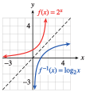
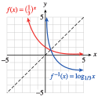
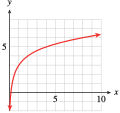
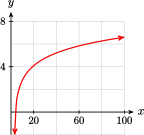
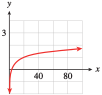
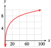

Exercises 3.7 Homework 5.2
¶In Problems 1–4,
Make tables of values for each exponential function and its inverse logarithmic function.
Graph both functions on the same set of axes.
1.
\(f(x)=2^x \)
-
\(x\) \(-1\) \(0\) \(1\) \(2\) \(2^x\) \(\frac{1}{2} \) \(1\) \(2\) \(4\) \(x\) \(\frac{1}{2} \) \(1\) \(2\) \(4\) \(\log_2 x\) \(-1\) \(0\) \(1\) \(2\) - 
2.
\(f(x)=3^x \)
3.
\(f(x)=\left(\dfrac{1}{3} \right)^x \)
-
\(x\) \(-2\) \(-1\) \(0\) \(1\) \(\left(\frac{1}{3}\right)^x\) \(9\) \(3\) \(1\) \(\frac{1}{3} \) \(x\) \(9\) \(3\) \(1\) \(\frac{1}{3} \) \(\log_{1/3} x\) \(-2\) \(-1\) \(0\) \(1\) - 
4.
\(f(x)=\left(\dfrac{1}{2} \right)^x \)
5.
How large must \(x\) be before the graph of \(y = \log_{10} x\) reaches a height of \(4\text{?}\)
How large must \(x\) be before the graph of \(y = \log_{10} x\) reaches a height of \(8\text{?}\)
\(x=10,000\)
\(x=10^{8} \)
6.
How large must \(x\) be before the graph of \(y = \log_{2} x\) reaches a height of \(5\text{?}\)
How large must \(x\) be before the graph of \(y = \log_{10} x\) reaches a height of \(10\text{?}\)
7.
For what values of \(x\) is \(y = \log_{10} x \lt -2\text{?}\)
\(0\lt x \lt 0.01\)
8.
For what values of \(x\) is \(y = \log_{2} x \lt -3\text{?}\)
In Problems 9–14, \(f(x) = \log_{10} x\text{.}\) Evaluate.
9.
\(f(487)+f(206) \)
\(f(487+206) \)
\(\log 100,322\approx 5.001\)
\(\log 693\approx 2.841\)
10.
\(f(93)+f(1500) \)
\(f(93+1500) \)
11.
\(f(-7) \)
\(6f(28) \)
\(\log (-7)\) is undefined.
\(6 \log 28\approx 8.683\)
12.
\(f(0) \)
\(3f(41 ) \)
13.
\(18-5f(3) \)
\(\dfrac{2}{5+f(0.6)} \)
\(15.614\)
\(0.419\)
14.
\(15-4f(7) \)
\(\dfrac{3}{2+f(0.2)} \)
15.
Let \(f(x) = 3^x\) and \(g(x) = \log_3 x\text{.}\)
Compute \(f (4)\text{.}\)
Compute \(g[ f (4)]\text{.}\)
Explain why \(\log_3 3^x = x\) for any \(x\text{.}\)
Compute \(\log_3 3^{1.8}\text{.}\)
Simplify \(\log_3 3^a\text{.}\)
\(81\)
\(4\)
Definition of logarithm base \(3\)
\(1.8\)
\(a\)
16.
Let \(f(x) = 2^x\) and \(g(x) = \log_2 x\text{.}\)
Compute \(f (32)\text{.}\)
Compute \(g[ f (32)]\text{.}\)
Explain why \(2^{\log_2 x} = x\) for any \(x\gt 0\text{.}\)
Compute \(2^{\log_2 6} \text{.}\)
Simplify \(2^{\log_2 Q}\text{.}\)
17.
If \(h(r ) = \log_2 r\text{,}\) find \(h^{-1}(8)\text{.}\)
If \(H(w) = 3^w\text{,}\) find \(H^{-1}\left(\dfrac{1}{9} \right) \text{.}\)
\(2^8\)
\(-2\)
18.
If \(g(z ) = \log_3 z\text{,}\) find \(g^{-1}(-3)\text{.}\)
If \(G(q) = 2^q\text{,}\) find \(G^{-1}(1) \text{.}\)
For Problems 19–20, simplify.
19.
\(10^{\log 2k} \)
\(10^{3\log x} \)
\((\sqrt{10})^{\log x} \)
\(\log 100^m \)
\(2k\)
\(x^3\)
\(\sqrt{x} \)
\(2m\)
20.
\(\log 10^{(1-x)} \)
\(100^{\log 2x} \)
\((0.1)^{\log (x-1)} \)
\(\log 10^{\log 10} \)
21.
What is the domain of the function \(f(x) = 4 + \log_3(x - 9)\text{?}\)
Find a formula for \(f^{-1}(x)\text{.}\)
\((9,\infty) \)
\(f^{-1} (x) = 3^{x-4} + 9 \)
22.
What is the domain of the function \(f(x) = 1- \log_2(16-4x)\text{?}\)
Find a formula for \(f^{-1}(x)\text{.}\)
23.
Find the inverse of the function \(f (x) = 100 - 4^{x+2}\text{.}\)
Show that \(f^{-1}\) undoes the effect of \(f\) on \(x = 1\text{.}\)
Show that \(f\) undoes the effect of \(f^{-1}\) on \(x = 84\text{.}\)
\(f^{-1}(x)= \log_4 (100 - x) - 2 \)
\(f^{-1} (f(1)) = f^{-1}(36)=\log_4(64)-2=1 \)
\(f\left(f^{-1} (84)\right)= f (0) = 100 - 4^2 = 84\)
24.
Find the inverse of the function \(f (x) = 5 + 2^{-x}\text{.}\)
Show that \(f^{-1}\) undoes the effect of \(f\) on \(x = -2\text{.}\)
Show that \(f\) undoes the effect of \(f^{-1}\) on \(x = 6\text{.}\)
For Problems 25–26, match each graph to its equation.
25.
\(y = \log_2(x - 3) \)
\(y = 3 + \log_2 x \)
\(y=2 - \log_2 x \)
\(y = \log_2(x + 4) - 1 \)
- 


- 
IV
I
II
III
26.
\(y = 5\log x \)
\(y = \log \dfrac{x}{2} \)
\(y= \log \dfrac{1}{x} \)
\(y = \log(-x) \)
- 

- 
27.
In a psychology experiment, volunteers were asked to memorize a list of nonsense words, then 24 hours later were tested to see how many of the words they recalled. On average, the subjects had forgotten \(20\%\) of the words. The researchers found that the more lists their volunteers memorized, the larger the fraction of words they were unable to recall. (Source: Underwood, Scientific American, vol. 210, no. 3)
| Number of lists, \(n\) | \(1\) | \(4\) | \(8\) | \(12\) | \(16\) | \(20\) |
| Percent forgotten, \(F\) | \(20\) | \(40\) | \(55\) | \(66\) | \(74\) | \(80\) |
Plot the data. What sort of function seems to fit the data points?
-
Psychologists often describe rates of forgetting by logarithmic functions. Graph the function
\begin{equation*} f (n) = 16.6 + 46.3 \log n \end{equation*}on the same graph with your data. Comment on the fit.
What happens to the function \(f (n)\) as \(n\) grows increasingly large? Does this behavior accurately reflect the situation being modeled?

The graph resembles a logarithmic function. The (translated) log function is close to the points but appears too steep at first and not steep enough after \(n = 15\text{.}\) Overall, it is a good fit.
\(f\) grows (more and more slowly) without bound. \(f\) will eventually exceed \(100\) per cent, but no one can forget more than \(100\%\) of what is learned.
28.
The water velocity at any point in a stream or river is related to the logarithm of the depth at that point. For the Hoback River near Bondurant, Wyoming,
where \(v\) is the velocity of the water, in feet per second, and \(d\) is the vertical distance from the stream bed, in feet, at that point. For Pole Creek near Pinedale, Wyoming,
Both streams are \(1.2\) feet deep at the locations mentioned. (Source: Leopold, Luna, Wolman, and Gordon, 1992)
-
Complete the table of values for each stream.
Distance from bed (feet) \(0.2\) \(0.4\) \(0.6\) \(0.8\) \(1.0\) \(1.2\) Velocity, Hoback
River, (ft/sec)Velocity, Pole Creek (ft/sec) If you double the distance from the bed, by how much does the velocity increase in each stream?
Plot both functions on the same graph.
The average velocity of the entire stream can be closely approximated as follows: Measure the velocity at \(20\%\) of the total depth of the stream from the surface and at \(80\%\) of the total depth, then average these two values. Find the average velocity for the Hoback River and for Pole Creek.
In Problems 29–30, \(f (x) = \log_{10} x\text{.}\) Solve for \(x\text{.}\)
29.
\(f (x) = 1.41\)
\(f (x) = -1.69\)
\(f (x) = 0.52\)
\(10^{1.41}\approx 25.704 \)
\(10^{-1.69}\approx 0.020417 \)
\(10^{0.52}\approx 3.3113 \)
30.
\(f (x) = 2.3\)
\(f (x) = -1.3\)
\(f (x) = 0.8\)
For Problems 31-38, convert the logarithmic equation to exponential form.
For Problems 39-46, solve for the unknown value.
For Problems 47-54, solve the logarithmic equation.
47.
\(\log_{10} x + \log_{10}(x + 21) = 2\)
\(x=4\)
48.
\(\log_{10} (x+3) + \log_{10}x = 1\)
49.
\(\log_{8} (x+5) - \log_{8}2 = 1\)
\(x=11\)
50.
\(\log_{10} (x-1) - \log_{10}4 = 2\)
51.
\(\log_{10} (x+2) + \log_{10}(x-1) = 1\)
\(x=3\)
52.
\(\log_{4} (x+8) - \log_{4}(x+2) = 2\)
53.
\(\log_{3} (x-2) - \log_{3}(x+1) = 3\)
No solution
54.
\(\log_{10} (x+3) - \log_{10}(x-1) = 1\)
For Problems 55-60, solve for the indicated variable.
55.
\(t = T \log_{10}\left(1+\dfrac{A}{k} \right)\text{,}\) for \(A\)
\(A=k(10^{t/T}-1) \)
56.
\(\log_{10} R= \log_{10} R_0 +kt \text{,}\) for \(R\)
57.
\(N=N_0 \log_b (ks) \text{,}\) for \(s\)
\(s=\dfrac{b^{N/N_0}}{k} \)
58.
\(T=\dfrac{H\log_{10}\dfrac{N}{N _0} }{\log_{10} \dfrac{1}{2}} \text{,}\) for \(N\)
59.
\(M=\sqrt{\dfrac{\log_{10}H}{k\log_{10} H_0}} \text{,}\) for \(H\)
\(H=(H_0)^{kM^2} \)
60.
\(h=a-\sqrt{\dfrac{\log_{10}B}{t}} \text{,}\) for \(B\)
61.
Choose the graph for each function described below.
- The area, \(A\text{,}\) of a pentagon is a quadratic function of the length, \(l\text{,}\) of its side.
- The strength, \(F\text{,}\) of a hurricane varies inversely with its speed, \(s\text{.}\)
- The price of food has increased by \(3\%\) every year for a decade.
- The magnitude, \(M\text{,}\) of a star is a logarithmic function of its brightness, \(I\text{.}\)
- The speed of the train increased at a constant rate.
- If you do not practice a foreign language, you lose \(\frac{1}{8} \) of the words in your working vocabulary, \(V\text{,}\) each year.

II
VI
III
V
I
IV
62.
For each of the functions listed below, select the graph of its inverse function, if possible, from the figures labeled I–VI. (The inverse of one of the functions is not shown.)
\(f (x) = 2^x\)
\(f (x) = x^2, ~~x \ge 0\)
\(f (x) = \dfrac{2}{x} \)
\(f(x)=\sqrt{x} \)
\(f (x) = \log_2 x\)
\(f(x)=\left(\dfrac{1}{2} \right)^x \)


For Problems 63-64, graph the function on the domain [-4, 4] and a suitable range. Which have inverses that are also functions?
63.
\(f (x) = 5(2^{-x^2})\)
\(f (x) = 2^x + 2^{-x}\)
-

No inverse function
-
No inverse function
64.
\(f(x)=5(\log(x))^2+1 \)
\(f(x)=5\log(x^2+1) \)
For Problems 65-68, graph the pair of functions on your calculator. Explain the result.
65.
\(f (x) = \log(2x), ~~~g(x) = \log 2 + \log x\)
The functions are equal.
66.
\(f (x) = \log\left(\dfrac{x}{3}\right), ~~~g(x) = \log x - \log 3\)
67.
\(f (x) =\log\left(\dfrac{1}{x}\right), ~~~g(x) = -\log x\)
The functions are equal.
68.
\(f (x) = \log(x^3), ~~~g(x) = 3 \log x\)
69.
-
Complete the following table.
\(x\) \(x^2\) \(\log_{10}x\) \(\log_{10}x^2 \) \(1\) \(\hphantom{00000}\) \(\hphantom{0000000}\) \(\hphantom{0000000}\) \(2\) \(\hphantom{00000}\) \(\hphantom{00000}\) \(\hphantom{00000}\) \(3\) \(\hphantom{00000}\) \(\hphantom{00000}\) \(\hphantom{00000}\) \(4\) \(\hphantom{00000}\) \(\hphantom{00000}\) \(\hphantom{00000}\) \(5\) \(\hphantom{00000}\) \(\hphantom{00000}\) \(\hphantom{00000}\) \(6\) \(\hphantom{00000}\) \(\hphantom{00000}\) \(\hphantom{00000}\) Do you notice a relationship between \(\log_{10} x\) and \(\log_{10} x^2\text{?}\) State the relationship as an equation.
\(x\) \(x^2\) \(\log_{10}x\) \(\log_{10}x^2 \) \(1\) \(1\) \(0\) \(0\) \(2\) \(4\) \(0.301\) \(0.602\) \(3\) \(9\) \(0.477\) \(0.954\) \(4\) \(16\) \(0.602\) \(1.204\) \(5\) \(25\) \(0.699\) \(1.398\) \(6\) \(36\) \(0.778\) \(1.556\) \(\log_{10}x^2=2\log_{10}x \)
70.
-
Complete the following table.
\(x\) \(\dfrac{1}{x} \) \(\log_{10}x\) \(\log_{10}\dfrac{1}{x} \) \(1\) \(\hphantom{00000}\) \(\hphantom{0000000}\) \(\hphantom{0000000}\) \(2\) \(\hphantom{00000}\) \(\hphantom{00000}\) \(\hphantom{00000}\) \(3\) \(\hphantom{00000}\) \(\hphantom{00000}\) \(\hphantom{00000}\) \(4\) \(\hphantom{00000}\) \(\hphantom{00000}\) \(\hphantom{00000}\) \(5\) \(\hphantom{00000}\) \(\hphantom{00000}\) \(\hphantom{00000}\) \(6\) \(\hphantom{00000}\) \(\hphantom{00000}\) \(\hphantom{00000}\) Do you notice a relationship between \(\log_{10} x\) and \(\log_{10} \dfrac{1}{x} \text{?}\) State the relationship as an equation.
In Problems 69 and 70, you found relationships between \(\log_{10} x\) and \(\log_{10} x^2\text{,}\) and between \(\log_{10} x\) and \(\log_{10} \dfrac{1}{x}\text{.}\) Assumingthat those relationships hold for any base, complete the following tables and use them to graph the given functions.
71.
| \(x\) | \(y=\log_e x \) |
| \(1\) | \(0\) |
| \(2\) | \(0.693\) |
| \(4\) | |
| \(16\) | \(\) |
| \(\frac{1}{2} \) | |
| \(\frac{1}{4} \) | \(\) |
| \(\frac{1}{16} \) | \(\) |
| \(x\) | \(y=\log_e x \) |
| \(1\) | \(0\) |
| \(2\) | \(0.693\) |
| \(4\) | \(1.386\) |
| \(16\) | \(2.772\) |
| \(\frac{1}{2} \) | \(-0.693\) |
| \(\frac{1}{4} \) | \(-1.386\) |
| \(\frac{1}{16} \) | \(-2.772\) |

72.
| \(x\) | \(y=\log_f x \) |
| \(1\) | \(0\) |
| \(2\) | \(0.431\) |
| \(4\) | |
| \(16\) | \(\) |
| \(\frac{1}{2} \) | |
| \(\frac{1}{4} \) | \(\) |
| \(\frac{1}{16} \) | \(\) |